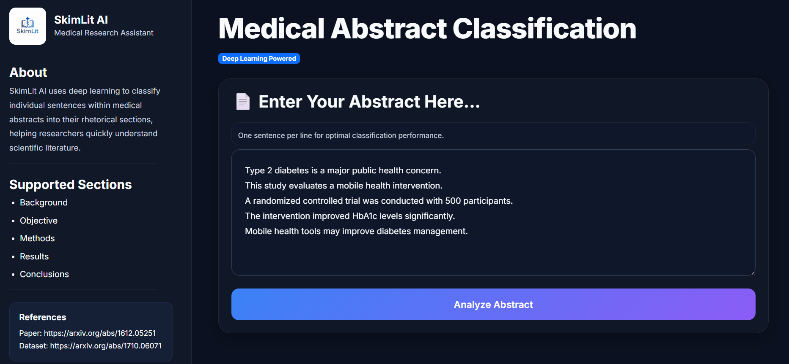
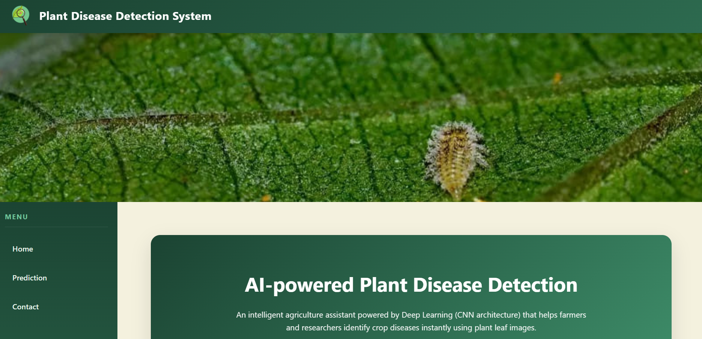
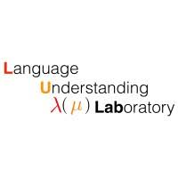

About
AI Engineer & Educator
My journey started as a mathematics teacher and evolved into machine learning, data science, and artificial intelligence. I have experience in Natural Language Processing, Computer Vision, predictive modeling, and educational technology. I am passionate about applying AI to solve real-world problems while empowering underserved communities through education.
Projects
Featured Works


Research / NLP
Burmese Humour Classification
Research work involving Burmese language processing, tokenization techniques, text preprocessing, and low-resource language AI.
Burmese Language Processing
Skills
Technologies I Work With
Python
TensorFlow
Keras
PyTorch
Scikit-learn
Machine Learning
Deep Learning
NLP
Computer Vision
RAG
LangChain
LLMs
SQL
Git
Burmese NLP
Education
Academic Journey
2023 - 2027
B.Sc. Statistics & Data Science
Parami University • Dean's List Student (2024–2026)
2024
Diploma in Data Science & AI
Símbolo
Experience
Professional Journey
Apr 2025 – Aug 2025
Research Intern – Language Understanding Laboratory
Worked on Burmese Humour Classification, language modeling, text preprocessing, and NLP projects.
Feb 2025 – May 2025
Teaching Assistant – Data Science Track (Símbolo)
Supported Statistics and AI courses, helping students implement and debug ML models.
Jan 2025 – Mar 2025
Team Member – NLP & Tokenization (SímboloAI)
Conducted Burmese NLP research and explored tokenization techniques for low-resource languages.
Jun 2024 – Oct 2025
Mathematics Teacher
Taught Mathematics and English to underprivileged students in Sagaing.
Contact